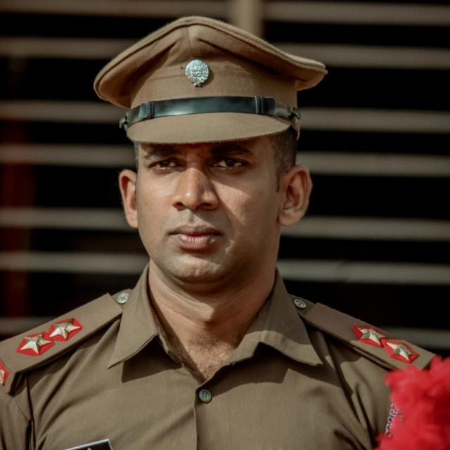

Principal's Message...
ಅನ್ನದಾನಾತ್ ಪರಂ ದಾನಮ್, ವಿದ್ಯಾ ದಾನ ಮತಃ ಪರಂ । ಅನ್ನೇನ ಕ್ಷಣಿಕಾ ತೃಪ್ತಿ:, ಯಾವಜ್ಜೀವಂ ಚ ವಿದ್ಯಯಾ ।। :so goes a subhashita. Handing out food to the needy is considered a noble act of kindness, but providing education is nobler than that. Food will have a feel-good factor only temporarily. The satisfaction derived from education endures unto the last. Education is a primordial element in evolving a civilisation and a bulwark of empowerment. Considering the importance of education, individuals and institutions dedicated to serve the humankind, have strained every sinew to set up educational facilities that have proven positive ramifications in the nook and cranny of the nation. Apart from bridging the urban-rural divide, these facilities have helped the underprivileged sections to muster strength to stand up and get noticed.
In the forefront of this noble mission, the CBE, Mangalore enjoys a distinct place. An array of learning centers established from time to time as per the need of the hour are a testimony to the service rendered to the society by the Missionaries. Sacred Heart College is one of the distinguished institutions managed by the CBE. Over the years the college has gone from one strength to another. Only stars have meteoric rise. Institutions rise in phases. The pulls and pressures of deficiencies bog down a young institution, but the undesirable situation is short lived. Interventional measures serve as pick- me- up. The unheralded rural setting has been a formidable challenge. The rustic young talent is restless to express itself here. A pragmatic approach of the Management has mitigated the hardships. In the last 15 – 20 years consolidation process has been constantly on. The results are tangible. Our students albeit their rustic background have risen to the occasion when it mattered the most and stood tall in the area of action – be it academic or cultural or sports and games.
A big tally of medals earned by our students in the last couple of years is an unfailing testimony to the institutional efforts towards quality enhancement and accomplishment, fortitude and focus of the students as well as the intense will of all the Sacred Heart members to conquer. In the years that I have been assigned the leadership role at our esteemed institution, I have reasons to feel overwhelmed by the achievements of the College. Our talented young sports stars have displayed their mettle in the sporting arena in areas as diverse as Kabaddi, Football, Ball- badminton in both men and women sections at the University and State open Tournaments and returned with rich exploits. The icing on the cake is the dominant performance in the Football tournament. The acid test awaited the Institution this academic year, which incidentally happens to be the last year of my teaching and administrative career. The entire year was a beehive of activities as the college was in preparation mode for Reaccreditation by the NAAC. Every member of the Sacred Heart family contributed their lot to land the coveted top grade.
'Together we can' were the buzz words and going an extra mile was the creed. Our sincere and focused efforts returned rich rewards.
History of Sacred Heart College, Madanthyar
On 2nd February 1801 Francis Buchanan, a traveler, passed through the area where Madanthyar is situated. He was enthralled by the hills, the forests and the wild animals of the region. He specially mentions the wild animals that attacked the voyagers who were traveling towards Mysore kingdom. Madanthyar and the surrounding villages that are located in the Malnad area of Dakshina Kannada must have been fearful places where hardly any person dared to enter. The local folklore gives a sacred meaning to Madanthyar i.e. “Mattada Thyaru” It means the property of ‘mutt’ or monastery. Hence, it is co-incidental and apt that the church and its institutions are dedicated to the sacred heart of Jesus. The Revenue department of government of Karnataka categorizes Madanthyar as a backward rural Malenad area. Most of the people are poor engaging themselves in beedi rolling, small farming and agricultural labour. With regard to industries, Madanthyar has nothing to boast. Hundred years from now, a historian examining the history of Madanthyar will definitely declare that the starting of Sacred Heart institutions transformed the history of Madanthyar. It is interesting to note that the Jesuits from Mangalore had a bungalow in the place where the college is now situated. When Fr Jacob Sequeira opened Guardian Angel’s Primary School in 1898 he held the classes in that bungalow.
Madanthyar that had a school nearly 85 years old needed further development especially with regard to education. When it was not uncommon to establish colleges in the urban centres it needed extraordinary vision and courage to start institutions of higher learning in humble set ups. Moreover, a college was a necessity for the people of Madanthyar as they had to go to far away places like Bantwal, Ujre, and Mangalore to get education. Thanks to the tireless efforts of Rev Liguory D’Souza Sacred Heart College today can rightly boast of imparting quality education to the rural youth who otherwise would have been left with very few choices in their lives. In spite of limited resources he ventured to start the high school and Sacred Heart pre-university college in 1981 and the Sacred Heart College was established on 15 July 1982 managed by the Catholic Board of Education of the Mangalore Diocese.
Fr Liguory had the acumen to synergise the energies and talents for a common cause. He sought the support and help of Fr Theophilus Pereira OFM Cap, Fr Elias Dias, Messrs. Antony D’Souza, Casmir Menezes, J.B. Sequeira, Rev. M.Goveas S.J., Mr Gangadhara Gowda, Mr P.F. Rodrigues and Mr Veerappa Moily to make the dream a reality. A special salute is reserved to the parishioners of Madanthyar but for their constant support the college would not have come up in Madanthyar. Affiliated to Mangalore University, the college offers B.A. and B.Com degrees. Fr Lawrence Rodrigues shouldered the responsibility of the principal. He traveled in India and abroad to secure funds from friends and philanthropists in order to provide the much needed infrastructure, classrooms, and salary of lecturers. He went from house to house motivating the young to join the college.
Meanwhile, Fr Liguory D’Souza got transferred to Kulshekar, Mangalore. And, the mantle of the correspondent was placed on Fr Fred V. Pereira who assumed the charge of the parish priest on 3rd June 1983. They were the trying times. Fr Fred with his vision and managerial skills metamorphosed the entire Madanthyar to gear itself up to face the new challenges. Rt Rev Dr Basil D’Souza laid the foundation stone of the new building on 10 June 1983. The college building was constructed at the cost of Rs 15 lakhs. With their characteristic style the parishioners not only pooled their financial resources but also their physical labour and sweat to realize the dream. Sometimes, they used to work late into the night. The service rendered by the parishioners will be remembered always in every atom of this Institution. Even the students joined the struggle by offering ‘shramadan’ whenever required. After the completion of the ground floor it was occupied on 15 June 1984. Right from its inception the college attracted students from Hassan, Chickmagaloor, Sakaleshpur, Bangalore and other places not only for the quality of education but also for the quiet ambience that gave students an inspiration to learn. Hence, Sacred Heart hostel for men was planned and executed in 1984.
The Salesian sisters of Don Bosco of the Bombay province run a hostel for girls. Fr Wilson D’Souza held the responsibility of the principal from 1983 to 1984. He got the help from his friends and well-wishers to the college. Rev Dr Peter Theodore D’Souza was the principal from 1984 to 1985. Fr Francis Serrao held the office for a month from 1-6-1985 to 30-6-1985. Rev Dr Robert Crasta carried the responsibility from 1985 to 1994. Fr Crasta was instrumental to bring the college within the ambit of the Government Grants. At times he had to be in the state capital thrice a week shuttling between Madanthyar and Bangalore in order to get the grant. In 1988 Fr Fred and Fr Crasta started a programme called ‘earn while you learn’ for the needy students. According to this program the students would work for a part of the day to earn to provide for their studies. The parish gave those students the work and supported financially. The saga of the college is not just about success. It has faced many tribulations, of which the financial burden has been enormous. Some of the lecturers narrate an episode of a lecturer who used to wear the same jeans pant for a long time. When asked by the principal he replied with his unassuming simplicity that with the meager income he could not afford to buy another pair of trousers as he had to look after not only the ailing parents and younger brothers and sisters but also his daily bread. Therefore, 1989 was declared as the year of austerity in order to pay the heavy debts incurred to build the college. During that year all celebrations were cancelled and each home in the parish and each class room kept a box in order to gather savings. It is an important event in the annals of the college.
Founder Information
Sculptor of Modern Madanthyar
On 10 May 1972 Rev. Fr Ligoury D’Souza, as a priest, arrived to Madanthyar and took firm steps to implement a plan that could change the very shape of Madanthyar by trusting in the Sacred Heart of Jesus. He applied to the Government of Karnataka to open a high school, pre-university and a degree college through the Catholic Board of Education. As a result, on 29th June 1981, Sacred Heart High School came into existence and later, it converted into a Pre-University College. A year later in July 1982 Sacred Heart College, affiliated to Mangalore University was established. Rev. Fr. Lawrence Rodrigues was the founder Principal of Sacred Heart College. Fr. Ligoury D’Souza constructed a three-storey building for Sacred Heart College. But before those plans materialized, he was transferred to Kulasekhara Parish in Mangalore. Fr. D’Souza was the key factor in raising the academic standards through his memorable 11-year-long service. Envisioning higher education for Madanthyar has led thousands of knowledge seekers to find their careers at National & International level as well. His religious consciousness and spiritual encouragement are immense. The extraordinary service rendered by him is not only memorable but also immortalized in the pages of history and in the hearts of people. The Blessed One left this world on 2nd September 1985.
The Creator of Modern Madanthyar
Rev. Dr Fred V. Pereira took charge as the parish priest & correspondent of Sacred Heart Church & Sacred Heart Educational Institutions on 3rd June 1983. He visited people’s houses and observed the situation of people. He realized that though there was an opportunity for higher education, economically weaker people did not have the benefit of it. Fr. Pereira undertook two separate programmes. In 1984, he launched a house-building scheme and also made a system of providing interest-free loans to the needy irrespective of caste & religion. For college students, he introduced the ‘earn while you learn’ scheme. Through the scheme, many students became financially empowered to pursue higher education. The foundation stone laying ceremony was held for the college building on 10th June 1983 and construction work started with minimal resources. Undaunted by the great leadership, with faith in God, Rev. Father prepared the ground floor of the college for inauguration on 15th June 1984. The lower floor was built in 1984 with plans to open a Sacred Heart Hostel to accommodate distant students. Today, this ‘Vidyadegula’ is providing the highest level of education to thousands of students to brighten their lives.
Sacred Heart College, an institution imparting quality higher education, set in peaceful environment, seeks to function through mutual love and dedicated service with efficiency and creativity, catering poor and the downtrodden, uphold the values propagated by Jesus Christ and enshrined in the constitution of India.

The college exists to impart quality higher education to all especially the poor and strives for integral development of the student through efficiency and creativity, to educate young persons to love their fellowmen through dedicated service in society and uphold the values to build Great India.
Pursuit of Excellence
Dedicated Service
Faith in God
Love of Fellow being
Moral and C
Department of History
The objective of a history department in a Bachelor of Arts (BA) program is to provide students with a comprehensive understanding of the past and its impact on the present. The specific goals and objectives may vary by institution, but generally, a history department aims to achieve the following:
Develop Critical Thinking Skills: Encourage students to analyze historical events, sources, and perspectives critically. Teach students to evaluate evidence and draw well-reasoned conclusions.
Foster Research Skills: Train students in historical research methods, including archival research, primary source analysis, and historiography. Cultivate the ability to conduct independent research and present findings effectively.
Promote Cultural Awareness: Provide students with a global perspective on historical events, cultures, and societies. Encourage an understanding of diverse perspectives and the impact of cultural, social, and economic factors on historical developments.
Enhance Communication Skills: Develop effective written and oral communication skills, enabling students to articulate historical arguments coherently. Promote the ability to present complex historical concepts to diverse audiences.
Encourage Civic Engagement: Foster an appreciation for the role of history in shaping contemporary society. Encourage students to engage with current events and societal issues informed by historical knowledge.
Cultivate Ethical Awareness: Discuss ethical considerations in historical research and interpretation. Promote a sense of responsibility in how historical knowledge is used and interpreted.
Provide a Foundation for Further Studies and Careers: Prepare students for advanced studies in history or related fields. Equip students with skills that are valuable in a variety of careers, including research, writing, critical analysis, and communication.
Offer Specialization Options: Allow students to focus on specific historical periods, regions, themes, or methodologies based on their interests. Provide opportunities for students to explore interdisciplinary approaches to history.
Instill a Love for Lifelong Learning: Foster a passion for history that extends beyond the academic setting. Encourage a commitment to continuous learning and intellectual curiosity.
In summary, the primary objective of a history department in a BA program is to provide students with a solid foundation in historical knowledge, critical thinking skills, and the ability to communicate effectively. This prepares them for a wide range of career paths and contributes to their development as informed and engaged citizens.
Department of Economics
he objective of a history department in a Bachelor of Arts (BA) program is to provide students with a comprehensive understanding of the past and its impact on the present. The specific goals and objectives may vary by institution, but generally, a history department aims to achieve the following:
Develop Critical Thinking Skills: Encourage students to analyze historical events, sources, and perspectives critically. Teach students to evaluate evidence and draw well-reasoned conclusions.
Foster Research Skills: Train students in historical research methods, including archival research, primary source analysis, and historiography. Cultivate the ability to conduct independent research and present findings effectively.
Promote Cultural Awareness: Provide students with a global perspective on historical events, cultures, and societies. Encourage an understanding of diverse perspectives and the impact of cultural, social, and economic factors on historical developments.
Enhance Communication Skills: Develop effective written and oral communication skills, enabling students to articulate historical arguments coherently. Promote the ability to present complex historical concepts to diverse audiences.
Encourage Civic Engagement: Foster an appreciation for the role of history in shaping contemporary society. Encourage students to engage with current events and societal issues informed by historical knowledge.
Cultivate Ethical Awareness: Discuss ethical considerations in historical research and interpretation. Promote a sense of responsibility in how historical knowledge is used and interpreted.
Provide a Foundation for Further Studies and Careers: Prepare students for advanced studies in history or related fields. Equip students with skills that are valuable in a variety of careers, including research, writing, critical analysis, and communication.
Offer Specialization Options: Allow students to focus on specific historical periods, regions, themes, or methodologies based on their interests. Provide opportunities for students to explore interdisciplinary approaches to history.
Instill a Love for Lifelong Learning: Foster a passion for history that extends beyond the academic setting. Encourage a commitment to continuous learning and intellectual curiosity.
In summary, the primary objective of a history department in a BA program is to provide students with a solid foundation in historical knowledge, critical thinking skills, and the ability to communicate effectively. This prepares them for a wide range of career paths and contributes to their development as informed and engaged citizens.
National Cadet Corps
The National Cadet Corps (NCC) has several objectives, all aimed at fostering leadership, discipline, and a sense of national unity among the youth of the country. Here are the key objectives of the NCC:
Leadership Development: To develop qualities of leadership, self-confidence, and decision-making among the youth through a structured training program that includes military and leadership training activities.
Character Building: To instill values of discipline, integrity, and patriotism among cadets, fostering a sense of responsibility towards the nation and society.
National Integration: To promote national unity and integration by bringing together youth from diverse backgrounds, cultures, and regions under a common platform to work towards common goals.
Community Service: To engage cadets in various community development and social service activities aimed at addressing local needs, contributing to the welfare and upliftment of underprivileged sections of society.
Physical Fitness: To promote physical fitness and a healthy lifestyle among cadets through regular physical training, sports activities, and adventure pursuits.
Adventure Training: To provide opportunities for adventure training and outdoor activities such as trekking, mountaineering, sailing, and paragliding, fostering a spirit of adventure and resilience among cadets.
Environmental Awareness: To raise awareness about environmental conservation and sustainability among cadets, encouraging them to actively participate in tree plantation drives, cleanliness campaigns, and eco-friendly initiatives.
Career Opportunities:To provide career guidance and opportunities for cadets in the armed forces, paramilitary forces, and other government and private sector organizations, facilitating their transition into responsible and productive citizens.
International Cooperation: To promote goodwill and cooperation with other countries through exchange programs, international youth camps, and participation in multinational military and humanitarian exercises.
Citizenship Education: To impart knowledge about the country's history, constitution, and democratic values, fostering a sense of pride in national identity and promoting active citizenship among cadets.
Through these objectives, the NCC aims to nurture well-rounded individuals who are not only physically fit and disciplined but also socially responsible, morally upright, and committed to the service of the nation and humanity.
National Service Scheme
The National Service Scheme (NSS) is a prominent Indian government-sponsored public service program under the Ministry of Youth Affairs and Sports. Established in 1969, NSS aims to instill the value of social service, community engagement, and national development among Indian youth through voluntary activities.
Key features of the NSS include:
Voluntary Participation: NSS is open to all Indian students enrolled in universities and colleges, regardless of their academic disciplines.
Community Service: NSS engages students in various community development activities such as cleanliness drives, blood donation camps, literacy campaigns, health awareness programs, and environmental conservation initiatives.
Regular Activities: NSS volunteers are expected to dedicate a certain number of hours per week or month to participate in NSS activities, which are often organized both on and off-campus.
Special Camps: NSS organizes special camps, typically of seven days to two weeks duration, where volunteers work intensively on specific community projects. These camps provide opportunities for immersive learning, teamwork, and personal development.
Skill Development: NSS emphasizes the development of leadership, communication, and organizational skills among students through their involvement in various service projects.
University Credit: Participation in NSS often earns students credits towards their academic degrees, recognizing the value of their service contributions alongside their formal education.
National Integration: NSS promotes national integration by bringing together students from diverse backgrounds and regions to work towards common societal goals.
Partnerships: NSS collaborates with governmental and non-governmental organizations, as well as local communities, to implement its service projects effectively. NSS has made significant contributions to various social causes.